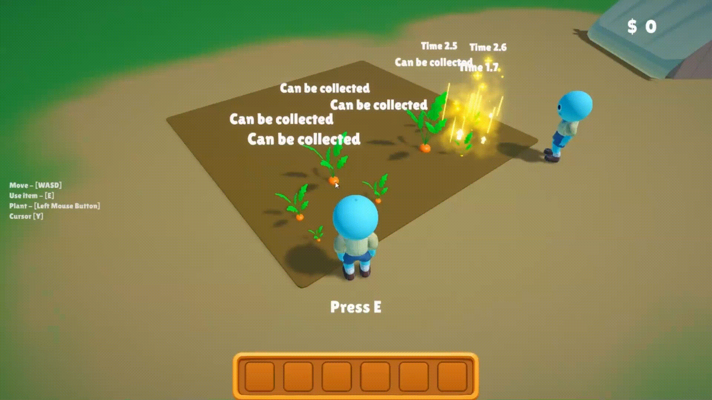

🌾 Make-a-Farm — マルチプレイヤー農場ゲーム
Unity 6 + Mirror。複数プレイヤーが同じ畑を共有する農場ゲームを個人開発しました。


1. クライアントを信用しないゲームプレイ設計
状態を変える処理はすべて [Command] でサーバーへ送り、SyncVar / SyncList の更新はサーバーだけが行う構成に統一。作物の成長はローカル時間ではなく NetworkTime.time 基準の期限で管理しています。
→ 途中参加したクライアントでも同じ成長段階が再現され、所持金・アイテムはクライアント側から書き換えられません。
コード： PlayerShopServer.cs ／ Plant.cs
2. 計測を起点にした描画最適化
Frame Debugger でバッチが分断されている箇所を特定し、①テクスチャをアトラスへ統合、②自作 MeshCombiner で静的メッシュを結合、③GPU インスタンシングを適用、の順で対処しました。
計測条件：同一シーン・同一設定・同一視点で比較。
コード： MeshCombiner.cs
3. ネットワークコードからドメインロジックを切り離す
インベントリのスタック処理を純粋な C# クラス InventoryModel へ抽出し、SyncList ではなく IList<InventorySlot> を受け取る形へ変更。専用 asmdef で Unity 非依存アセンブリに分離しました。
→ Unity を起動せず NUnit で検証可能に（現在はインベントリの7ケース）。
4. コードを書かずに作物を追加できるデータ設計
全アイテムは抽象 ScriptableObject ItemConfig を基底に ItemSeed（種）／ItemFood（収穫物）／ItemCare（手入れ道具）へ派生。作物を1種類増やす作業は ItemSeed アセットを作り、Stages[] に成長段階のプレハブ、TimePerStage に段階あたりの秒数、HarvestItem[] に収穫物、必要なら CareRequirement（水やり／施肥／除草／剪定）を差して Rebuild Database を押すだけで、C# には触れません。
→ ネットワーク越しに送るのは Id（int）だけ。SO 本体はサーバーとクライアントが各自ローカルに持つため、作物を増やしてもネットワークコードは変更不要です。
コード： ItemSeed.cs ／ CareRequirement.cs ／ ItemDatabaseBuilder.cs
ShopService の切り出しに取り組みます。